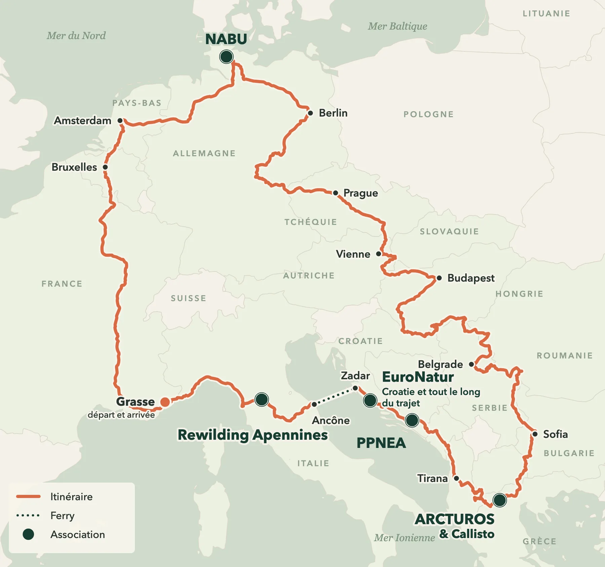

Projet étudiant et associatif
TRIADE : Three Riders In Adventure Discovering Europe
À vélo pour celles et ceux qui protègent le vivant
Trois étudiants, trois vélos, km à travers l’Europe, , à la rencontre d’associations de protection de la biodiversité.
Le projet
Une boucle européenne pour rencontrer ceux qui protègent la nature
Nous sommes trois étudiants de l’Institut Agro Montpellier. Pendant 6 mois, nous traversons l’Europe à vélo pour rencontrer six associations qui protègent des espèces menacées (ours, lynx, loup, cigognes) et raconter leur travail.
Les associations
Six associations pour protéger le vivant
Chacune défend un territoire et une espèce. Nous irons les voir, donner un coup de main sur place et raconter leur travail.
L’itinéraire
De la Côte d’Azur à la mer du Nord, par les Balkans
Des Apennins aux Balkans, du Danube à la mer du Nord : un seul trajet, six associations.

Sur la route
Dernières nouvelles
Ils nous soutiennent